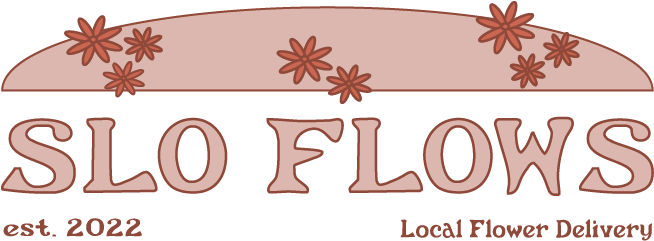

What is SLO Fows?
SLO Flows is a floral delivery service based out of San Luis Obispo, CA. The main concept for the company is to focus on local flower farms and their expertise. Having an emphasis on small local businesses is incredibly important for our company and our mision. Our main store is located in Downtown SLO with a smaller pop up shop in Avila Beach. Both of these locations attract locals and tourists to provide service to two diferent customer bases. We offer three ways of delivery: customized bouquets online can be sent to a desired address, set bouquet designs for holidays and birthdays, or you can come into one of our stores and design a bouquet yourself! SLO Flows will handle the shipping and delivery, but if you come into the store you can design the packaging yourself. Local, sustainable, and fresh service is what we strive for!